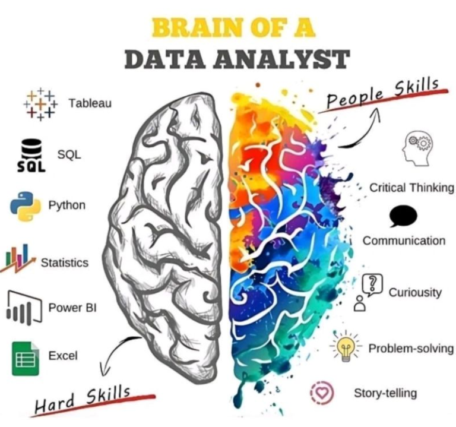

Unmet Mental Health
Quantifying unmet healthcare needs across federal demographics to drive legislative resource allocation. Performed rigorous Chi-Square statistical analysis on SAMHSA dataset parameters.
Behavioral Analyst & Data Storyteller
Graduate-level training in research methods and statistical analysis (Psychology; Cognitive/Behavioral emphasis). Skilled in SQL, Python, R, ETL workflows, visualization, and translating complex analyses into clear, actionable narratives for senior leadership and non-technical stakeholders.
Background includes evidence-based public-health research, analysis of SAMHSA/CDC/federal health datasets, and producing rigorously sourced, decision-focused insights.

Healthcare Data Analyst
Revenue Cycle Management, data quality, and analytics storytelling.
Quantifying unmet healthcare needs across federal demographics to drive legislative resource allocation. Performed rigorous Chi-Square statistical analysis on SAMHSA dataset parameters.
Reverse-engineering legacy sales metrics into a real-time reactive infrastructure for immediate business insight.
Critical heat-mapping of prescription trends to identify high-risk regional clusters of systemic fentanyl distribution.
Unmet Mental Health Approaching SAMHSA datasets from unexpected vectors to prove the impact of healthcare access on employment.
Dutch Retail Sales Reverse-engineering legacy sales metrics into a reactive decision system.
Fentanyl Morbidity Extracting hidden high-risk clusters from federal prescription data.
The Zen of Data Analysis explores analytics, communication, and visual storytelling through portfolio-linked articles and graphics.
Frames a healthcare question, builds the SQL pipeline, applies statistical testing, and explains why the result matters.
Takes complex public-health data and turns it into interpretable visual evidence for risk-focused decision making.
Shows dashboard thinking, metric design, and how raw reporting becomes something a manager can actually use.
Demonstrates question design, data preparation, analysis, visualization, and stakeholder-facing communication.
Email Darren directly at darren@darrenlittlejohn.com to discuss the portfolio and interview opportunities.